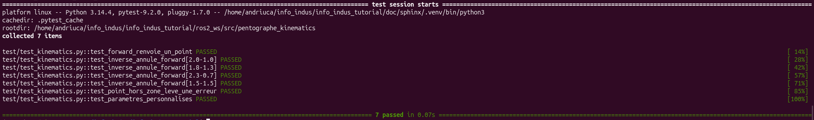

Tests du modèle géométrique
Le calcul des angles à partir de la position du crayon est la partie la plus sensible du pilotage : une erreur y fausse tout le dessin. Nous l’avons donc isolée dans un module Python testable indépendamment de ROS, et couverte par des tests automatiques.
Pourquoi tester
Les modèles géométriques direct et inverse sont écrits à la main : une faute de signe ou de longueur ne se voit pas à la lecture, mais fausse tout le dessin. Les tests vérifient automatiquement que le calcul est correct, sans avoir à brancher le robot.
Organisation du code
Le package pentographe_kinematics sépare volontairement deux choses :
kinematics.py: les modèles géométriques direct et inverse, en Python pur, sans aucune dépendance à ROS ;kinematics_node.py: le nœud ROS 2, qui ne fait qu’appeler le module ci-dessus.
Cette séparation permet de tester toutes les mathématiques sans robot, sans moteurs et sans ROS installé.
Stratégie de test
Les tests se trouvent dans test/test_kinematics.py et utilisent pytest.
Test |
Ce qu’il vérifie |
|---|---|
|
le modèle direct renvoie bien une position (x, y) |
|
pour plusieurs configurations, le modèle inverse redonne exactement les angles de départ : \(\text{MGI}(\text{MGD}(q_1, q_4)) = (q_1, q_4)\) |
|
un point hors de l’espace de travail lève bien une exception |
|
les modèles fonctionnent aussi avec d’autres dimensions (valeurs du cours) |
Le test le plus important est le second : il garantit que les deux modèles sont cohérents entre eux. C’est une propriété mathématique sûre, indépendante des valeurs mesurées.
Lancer les tests
Depuis le dossier du package :
cd ros2_ws/src/pentographe_kinematics
python3 -m pytest test/ -v
Si une erreur osrf_pycommon apparaît
Quand ROS 2 est installé, pytest essaie de charger un de ses plugins
(launch_testing) qui peut avoir une dépendance manquante. Nos tests n’en
ont pas besoin : il suffit de désactiver le chargement automatique des plugins.
PYTEST_DISABLE_PLUGIN_AUTOLOAD=1 python3 -m pytest test/ -v
Résultat attendu : les sept cas de test passent.


Résultat de l’exécution des tests : 7 passed.
Quand relancer les tests
Les tests doivent être relancés :
après toute modification de
kinematics.py(équations) ;après un changement des dimensions mesurées ;
avant de committer et d’ouvrir une pull request.
Si un test échoue, c’est que le calcul a été cassé : il faut corriger avant de continuer.
Fichiers générés et .gitignore
Certains outils créent des dossiers qui ne doivent pas être versionnés :
.pytest_cache/: créé par pytest à chaque exécution ;__pycache__/: cache Python ;build/,install/,log/: créés parcolcon build(compilation ROS 2).
Ces dossiers sont listés dans le fichier .gitignore à la racine du dépôt :
git les ignore donc automatiquement. Si vous ajoutez un outil qui génère de
nouveaux fichiers temporaires, ajoutez-les à .gitignore plutôt que de les
committer.
Note
À compléter au prochain accès au robot : les tests du nœud ROS 2 lui-même
(vérifier qu’il publie bien sur joint_commands quand il reçoit un point
sur pen_target), à exécuter une fois ROS disponible.